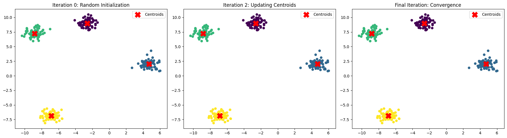

Workflows#
1. Initialization#
Choose the number of clusters (K) beforehand.
Randomly initialize K centroids (either by randomly selecting K data points or using smarter methods like K-Means++).
2. Assignment Step (Cluster Assignment)#
For each data point:
Compute the distance (usually Euclidean) to each centroid.
Assign the point to the cluster with the nearest centroid.
👉 After this step, every point belongs to exactly one cluster.
3. Update Step (Recompute Centroids)#
For each cluster:
Recalculate the centroid as the mean of all points assigned to that cluster.
👉 Centroids move toward the “center of mass” of their assigned points.
4. Iteration (Repeat Assignment + Update)#
Repeat Step 2 and Step 3 until one of the following conditions is met:
Centroids no longer move significantly (convergence).
Cluster assignments do not change.
Maximum number of iterations is reached.
5. Termination (Final Clusters)#
Once convergence is reached, the final set of clusters is obtained.
The algorithm outputs:
The cluster assignments for each data point.
The final centroids.
Workflow Visualization#
Initialization → Assignment → Update → Repeat → Convergence
Example (with K=3):
Randomly pick 3 centroids.
Assign points to nearest centroid.
Move centroids to mean of assigned points.
Repeat steps 2–3 until stable clusters emerge.
In short
K-Means is an iterative refinement process: Guess centroids → Assign points → Adjust centroids → Repeat until stable.
import numpy as np
import matplotlib.pyplot as plt
from sklearn.datasets import make_blobs
from sklearn.cluster import KMeans
# Generate synthetic dataset
X, _ = make_blobs(n_samples=300, centers=4, cluster_std=0.6, random_state=42)
# Store intermediate results manually for visualization
kmeans = KMeans(n_clusters=4, init='random', n_init=1, max_iter=1, random_state=42)
kmeans.fit(X)
centroids_0 = kmeans.cluster_centers_
labels_0 = kmeans.labels_
kmeans = KMeans(n_clusters=4, init=centroids_0, n_init=1, max_iter=2, random_state=42)
kmeans.fit(X)
centroids_1 = kmeans.cluster_centers_
labels_1 = kmeans.labels_
kmeans = KMeans(n_clusters=4, init=centroids_0, n_init=1, max_iter=10, random_state=42)
kmeans.fit(X)
centroids_final = kmeans.cluster_centers_
labels_final = kmeans.labels_
# Plot subplots for workflow visualization
fig, axes = plt.subplots(1, 3, figsize=(18, 5))
# Iteration 0 (random initialization)
axes[0].scatter(X[:, 0], X[:, 1], c=labels_0, cmap='viridis', s=30)
axes[0].scatter(centroids_0[:, 0], centroids_0[:, 1], c='red', marker='X', s=200, label="Centroids")
axes[0].set_title("Iteration 0: Random Initialization")
axes[0].legend()
# Iteration 2 (after assignment + update)
axes[1].scatter(X[:, 0], X[:, 1], c=labels_1, cmap='viridis', s=30)
axes[1].scatter(centroids_1[:, 0], centroids_1[:, 1], c='red', marker='X', s=200, label="Centroids")
axes[1].set_title("Iteration 2: Updating Centroids")
axes[1].legend()
# Final iteration (convergence)
axes[2].scatter(X[:, 0], X[:, 1], c=labels_final, cmap='viridis', s=30)
axes[2].scatter(centroids_final[:, 0], centroids_final[:, 1], c='red', marker='X', s=200, label="Centroids")
axes[2].set_title("Final Iteration: Convergence")
axes[2].legend()
plt.tight_layout()
plt.show()

Here’s a step-by-step workflow demonstration of K-Means Clustering:
Random Initialization → Centroids are placed randomly (Iteration 0).
Assignment Step → Each point is assigned to the nearest centroid.
Update Step → New centroids are computed as the mean of the assigned points.
Repeat → Assignment + Update steps continue until centroids stop moving significantly (convergence).
The plots above show how centroids move and clusters form across iterations — from random initialization → refined clusters → stable convergence.